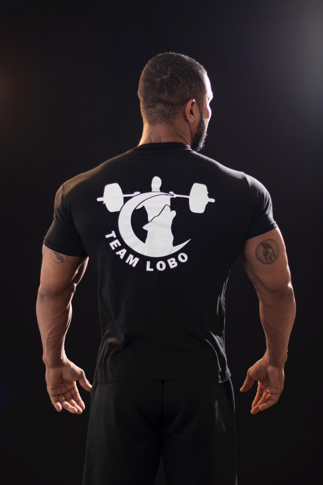
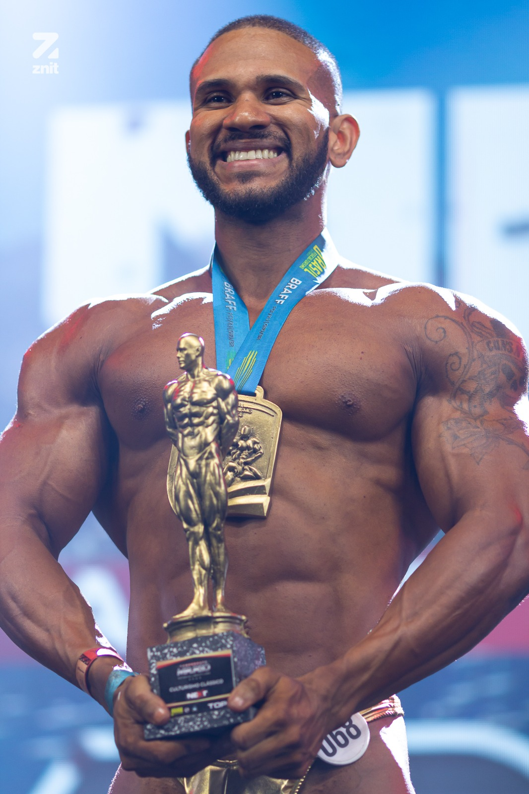

Team Lobo
Team LoboTreino individualizado
Volume, intensidade e exercícios pensados para o seu nível, o seu histórico e o tempo que você tem na semana.
Acompanhamento individualizado criado por Sid Lobo, bicampeão estadual de fisiculturismo. Treino, nutrição esportiva e suporte contínuo para transformar o seu físico.

Cada corpo responde de um jeito a estímulos, horários e cargas. O acompanhamento se apoia em quatro pilares.
Volume, intensidade e exercícios pensados para o seu nível, o seu histórico e o tempo que você tem na semana.
Plano alimentar alinhado ao seu gasto de energia e às suas preferências, com trocas práticas para manter a constância.
Canal aberto para tirar dúvidas, corrigir a execução e ajustar cargas e calorias conforme o corpo evolui.
Acompanhamento para quem vai competir, com a experiência de campeonatos estaduais e regionais do Rio de Janeiro.
Mensagens enviadas por alunos e atletas durante o acompanhamento.
De 102 kg para 84 kg, com trabalho integrado entre treino, nutrição esportiva e acompanhamento contínuo. Redução visível de gordura mantendo a estrutura muscular.
“Se fosse só dieta, a balança já teria baixado muito mais. Aqui é um conjunto: perdemos calorias e ganhamos massa magra. Vestia 46 com quase 92 kg e hoje estou no 40/42 com 85 kg.”
“Para alguns é só um certificado, mas para mim é a prova viva do quanto a minha luta foi grande este ano. Agradeço ao meu treinador Sid Lobo e à equipe por estarem comigo em cada etapa.”
“Vocês me motivam todos os dias a manter a constância. Ver roupas que nem entravam dando com folga e as pessoas perguntando o que estou fazendo me deixa ainda mais motivada.”
“Hoje atingi meu menor peso desde 2019! Bati 94,3 kg em jejum ao acordar. Que felicidade, 9 kg a menos!”
“Agora pode ter certeza que vou brilhar naquele palco representando a Team Lobo. Se confiei em você é porque sabia que era o cara certo para alavancar minha carreira.”
Mais relatos nos destaques do Instagram da Team Lobo.
Arraste para comparar. Imagens publicadas com autorização dos alunos. Os resultados variam de pessoa para pessoa.

Fundador e CEO da Team Lobo, Sid Lobo une a vivência de atleta campeão à formação em Educação Física e Fitoterapia. Ele ensina o aluno a treinar com técnica, controlar a intensidade e sustentar o resultado sem atalhos perigosos.
Head coach e CEO. Educação Física (CREF 013598), fitoterapeuta e campeão de fisiculturismo.

Nutricionista esportivo (CRN 17100205) e profissional de Educação Física.
Navegue pelo palco 3D, filtre por categoria ou clique em qualquer foto para abrir em tela cheia.
Você responde um questionário com histórico de treino, rotina alimentar, exames (se houver), fotos de avaliação e objetivos.
A equipe monta o seu treino e o planejamento nutricional sob medida para a sua realidade e o seu local de treino.
Suporte direto pelo WhatsApp para tirar dúvidas, corrigir movimentos e ajustar o protocolo conforme o corpo evolui.
Todos os planos incluem treino individualizado, orientação nutricional e suporte direto com a equipe.
Para conhecer a metodologia e dar o primeiro passo com direção.
R$ 300/mês
Ciclo de 60 dias para ajustar o metabolismo, ganhar ritmo e ver as primeiras mudanças.
R$ 420 por 2 meses
Acompanhamento completo por 12 meses, para consolidar o físico ou se preparar para o palco.
R$ 1.500 por 12 meses
Você fala com a equipe pelo WhatsApp, de segunda a sexta, das 9h30 às 18h. Depois da avaliação, recebe treino e dieta e conta com suporte online durante o plano.
Não. O treino é montado para a sua realidade e para o local onde você treina.
Sim. A equipe prepara atletas de fisiculturismo, com a experiência de campeonatos estaduais do Rio de Janeiro.
Todos incluem treino, dieta e suporte. A diferença é o tempo de acompanhamento: 1, 2 ou 12 meses. O plano anual sai por R$ 125 por mês.
Clique em agendar avaliação, conte seu objetivo pelo WhatsApp e a equipe indica o próximo passo.
Escolha as opções e a mensagem já sai pronta no WhatsApp. Nada fica salvo no site.